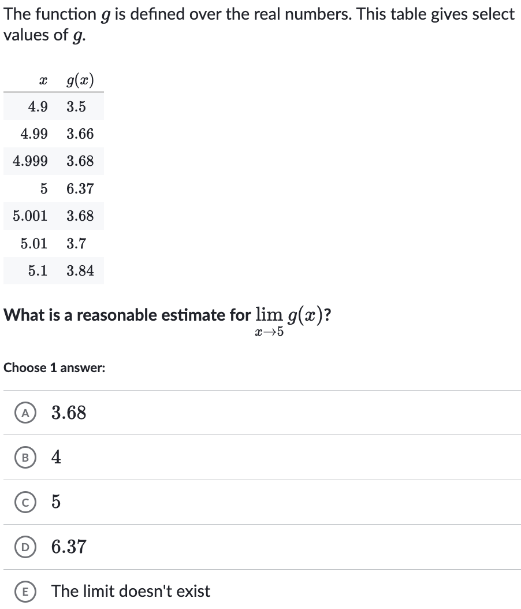
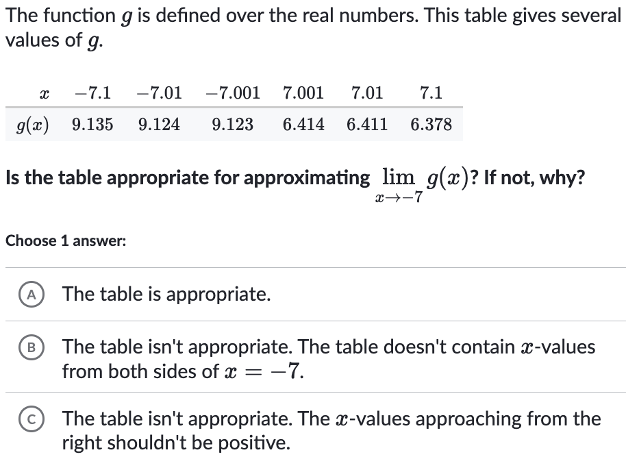

A limit describes what a function's value approaches as the input gets infinitely close to a point.
The limit might be different from the function's actual value at that point.
When the "journey's end" (the limit) matches the "destination" (the function's value), we call the function continuous at that point.
Topic 1: Estimating Limits from Tables and Graphs
Topic 2: ONE-SIDED Limits from Graphs
Deeper Dive: One-Sided Limits
Sometimes, the journey depends on the direction you're coming from. We can look at the limit from just the left or just the right.
Limit from the right: $\lim_{x \to c^+} f(x)$ means "what value does $f(x)$ approach as $x$ gets close to $c$ from values greater than $c$?"
Limit from the left: $\lim_{x \to c^-} f(x)$ means "what value does $f(x)$ approach as $x$ gets close to $c$ from values less than $c$?"
A (two-sided) limit $\lim_{x \to c} f(x)$ exists only if the journey from both sides leads to the same place: $\lim_{x \to c^-} f(x) = \lim_{x \to c^+} f(x)$
Topic 3: One-Sided Limits & Table Analysis


Working with Limits: The Limit Laws
For most functions, limits behave nicely with arithmetic. The limit of a sum is the sum of the limits, and so on.
Composite Functions $\lim_{x \to c} f(g(x))$: This is a two-step journey.
Inner Journey: First, find the limit of the *inside* function. Where is $g(x)$ heading as $x \to c$? Let's call this destination $L$.
Outer Journey: Now, use that result $L$ as the new target for the *outside* function. Where is $f(u)$ heading as its input $u \to L$?
This is like a relay race: the first runner's finish line ($L$) is the second runner's starting point.